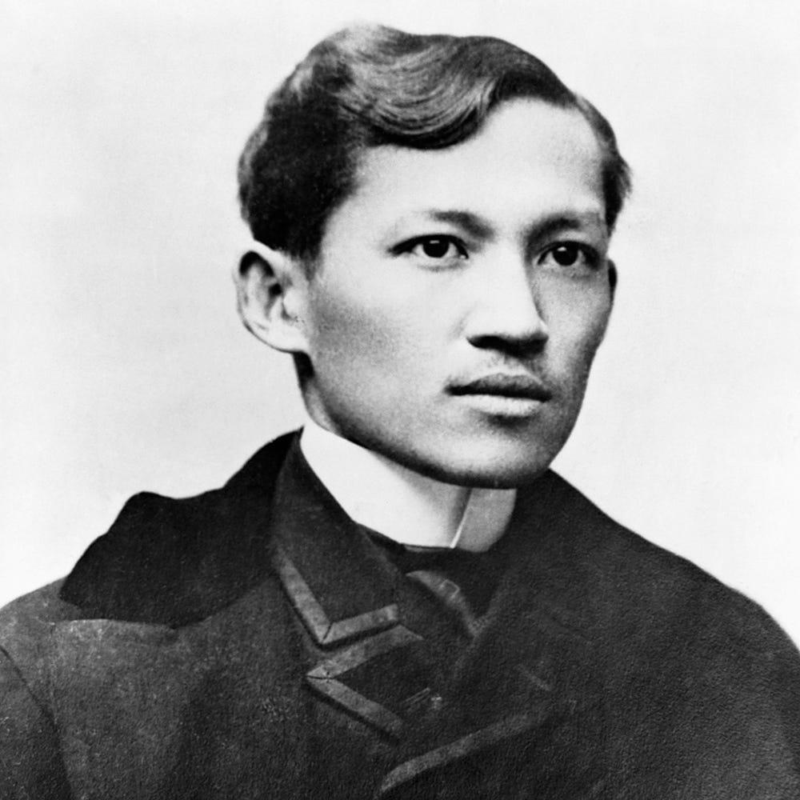
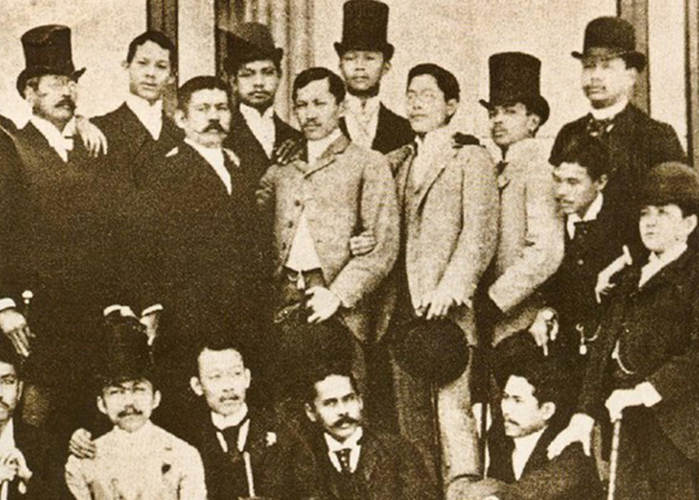
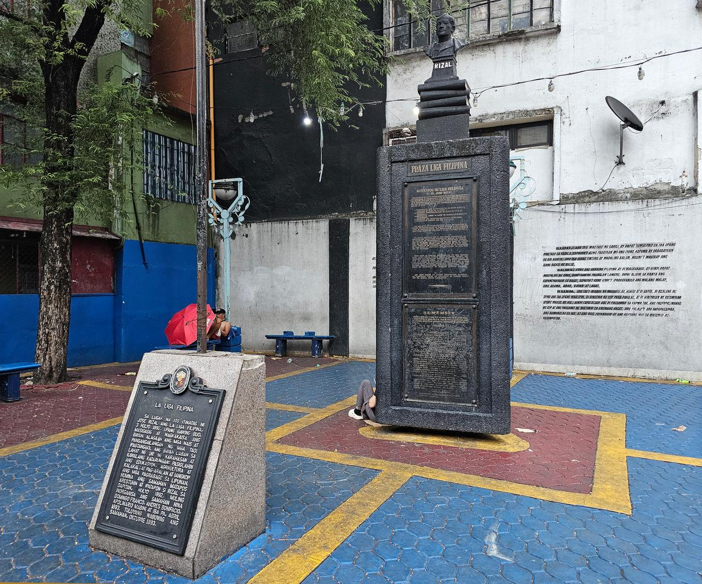
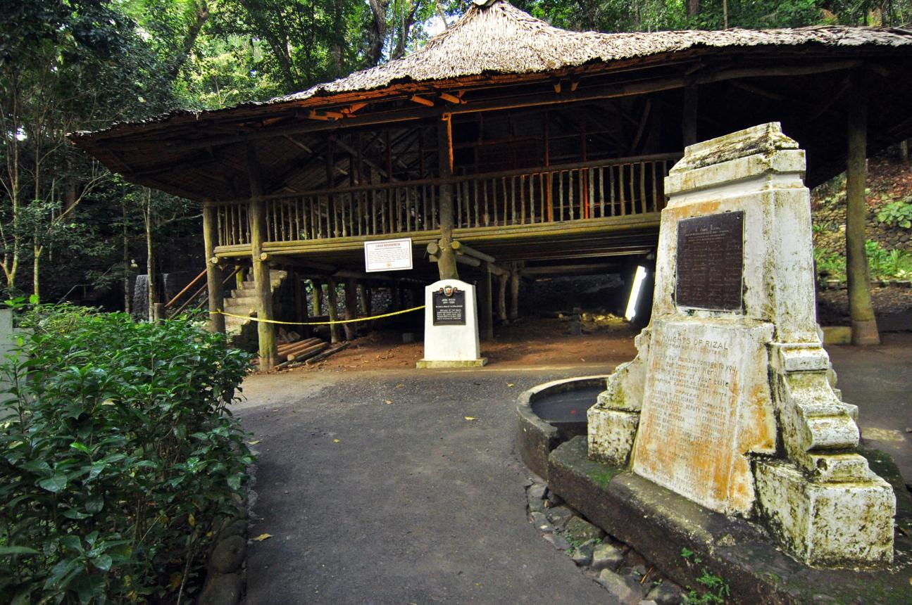
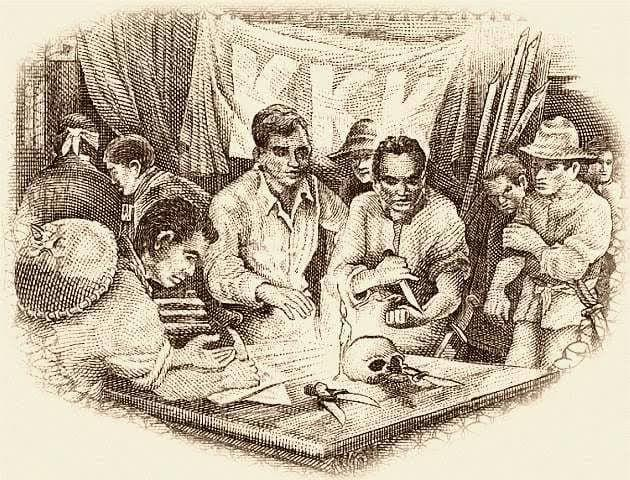

A digital historical exhibit · 1861—1896
Rizal:
The power of
ideas.
How one writer's vision moved through reform, community, exile, and sacrifice — and helped a people imagine themselves as a nation.
Begin the journey ↘
REFORM
TO
REVOLUTION
02 of 07
The pen
as a weapon.
Before revolution came a campaign for representation, education, and equal rights.

In the late nineteenth century, Filipino intellectuals in Spain and the Philippines organized the Propaganda Movement. They did not initially call for independence. They argued that Filipinos deserved the same civil rights as Spaniards and that the colony's abuses demanded reform.
Through essays, novels, speeches, and journalism, figures such as Rizal, Marcelo H. del Pilar, and Graciano López Jaena built a public case for change. Their newspaper, La Solidaridad, became the movement's most important platform.
the Spanish system
and education
political identity
03 of 07
A society for the people
Unity is
an act.

Rizal founded La Liga Filipina in Tondo in 1892 as a civic association. Its goal was practical: bring Filipinos together so they could support one another, defend one another from injustice, and work toward social improvement.
Its members imagined a community with mutual aid, education, and a collective voice. The Liga was not a revolutionary army; it was a blueprint for responsible citizenship.
Five principles
- 01Unity and mutual protection
- 02Mutual assistance in need
- 03Defense against violence
- 04Education and livelihood
- 05Study of reforms
04 of 07
Exile,
made useful.
In Dapitan, Rizal turned four years of isolation into a laboratory for service.

A different kind of resistance
Exile did not stop Rizal's work. Away from Manila's political circles, he practiced a quieter, tangible form of nation-building: teaching, healing, cultivating, and improving the place around him.
Education
He taught boys through practical study, discipline, and close attention to the world around them.
Medicine
He treated patients as an ophthalmologist and earned the trust of the local community.
Community
He helped develop water systems, agriculture, and public works that improved daily life.
05 of 07
When ideas
become action.
The revolution did not simply repeat Rizal's program. It carried his questions into a new, more urgent register.

The
Katipunan, founded by Andrés Bonifacio and others in 1892, pursued independence through secret organization and armed struggle. In August 1896, the discovery of the society helped trigger open revolt against Spanish rule.
Rizal's position was distinct: he advocated peaceful reform and opposed the uprising at that moment. Yet his novels, his execution on 30 December 1896, and his example gave the revolution a powerful moral vocabulary. His death transformed a reformist intellectual into a national symbol.
education and civic action
organized resistance
06 of 07
The through-line
A nation
in the making.
From one chapter to the next
01Reform gave Filipinos a shared language of rights.
02Unity made those ideas social and organized.
03Service showed nationhood as daily work.
04Revolution made the demand for freedom impossible to ignore.
Conclusion
How did Rizal contribute to Filipino nationalism?
Rizal helped Filipinos see themselves as one people with a shared history, dignity, and future. His writing exposed colonial injustice; his civic projects modeled collective responsibility; and his execution gave the struggle an enduring symbol. Though he did not lead the armed revolution, his ideas helped make Filipino nationalism imaginable, articulate, and powerful.
References
For further study: José Rizal: Life, Works, and Writings by Gregorio F. Zaide; Ambeth R. Ocampo's Rizal Without the Overcoat; the National Historical Commission of the Philippines; and the Official Gazette of the Republic of the Philippines.
Image notes
Historical visuals supplied in the project assets folder. Attribution and licensing details should be confirmed against the original source before publication.
07 of 07
Test your reading
What remains
with you?
Twenty questions across four chapters. Take your time, then see how the story connects.